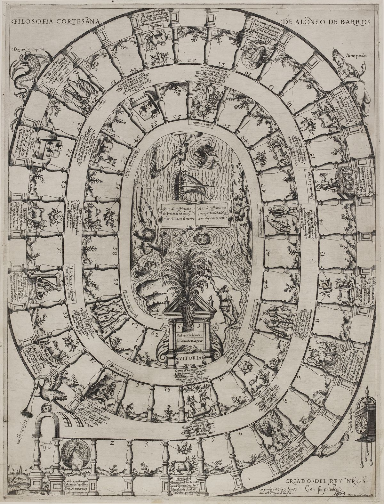

Madrid 1587 · Naples 1588
Filosofía cortesana
A board game from Spain, made in 1587 by Alonso de Barros, a royal servant who spent years petitioning for a better post. You play a petitioner at the court of King Philip II, chasing the favor that would make your fortune: the dice carry you through hope, flattery, false friends and ruin, and the first to land exactly on the Palm at square 63 wins the pot.

Now enter through the Gate of Opinion
Two or more players, one screen, the dice, and a pot of stakes. Every square you land on is shown with its verse, and Barros’s explanation is a tap away.